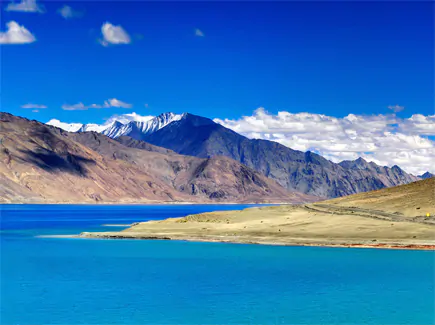
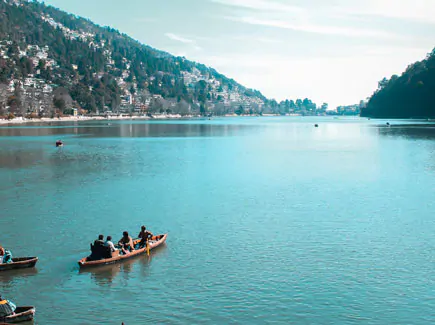
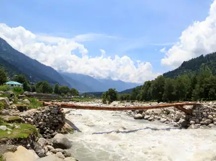
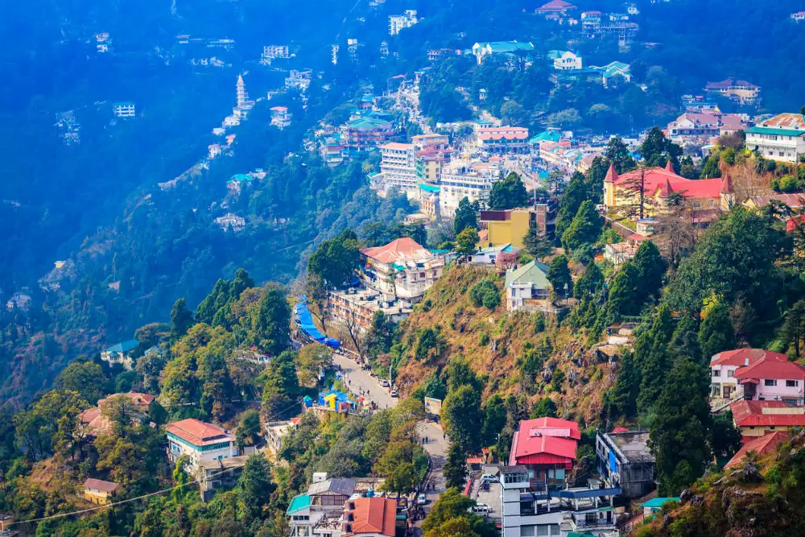
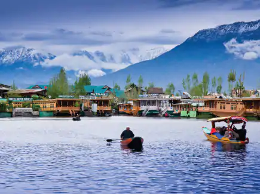
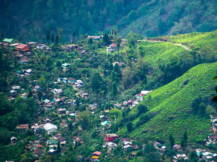
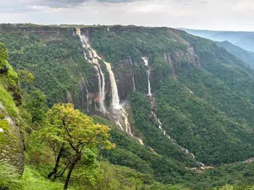
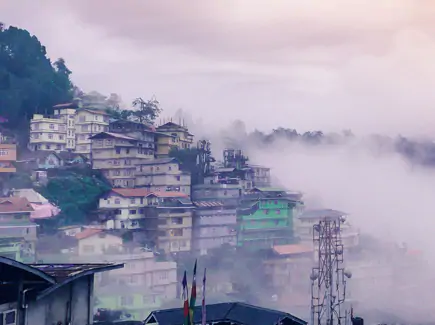
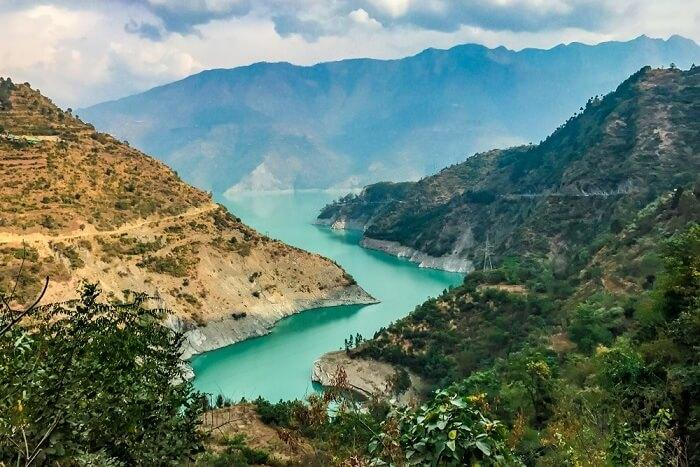
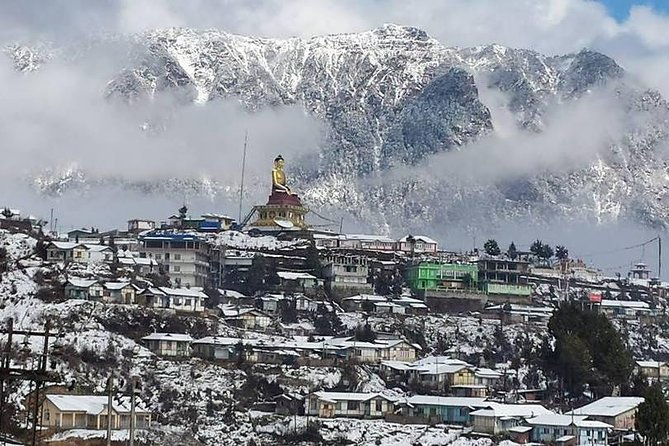

List Of The Top 10 Famous Hill Stations In India
- Leh Ladakh – Land of the High Passes

Counted among the highest hill stations in India, a trip to Leh Ladakh is also one of the
most famous. From driving in the world’s highest passes to soaking in the scenic beauty, there are a lot
of
reasons why Leh Ladakh is counted among the most famous hill stations in India. You can opt for a simple
tour package that takes care of your travel and accommodation or you can plan an adventurous bike ride
to
the destination. Some of the popular places you can check out include Pangong Lake, Royal Leh Palace,
Tso
Moriri, the Magnetic Hill, Zanskar Valley, and much more.
- Nainital, Uttarakhand – The Hill Station of Lakes

A small town in Uttarakhand’s Kumaon range, Nainital is one of the most popular honeymoon
destinations in India. It is also known as the ‘Lake District of India’ and has something to offer for
everyone, from families and couples to solo travellers. Some of the activities that may be enjoyed at
this
famous hill station in India include rock-climbing, canoeing, kayaking, horse riding and parasailing.
The
tourist spots in Nainital include Naini Peak, Snow View, Tiffin Top, and Naini Lake. The place also has
small markets that are always buzzing with activity and streets that lead to beautiful forest patches.
- Manali, Himachal Pradesh – Valley of the Gods

The Kullu Valley offers mesmerising views of scenic snow-clad peaks and lush forests as
well
as a number of activities to enjoy. On the list of hill stations in India that are most popular, Manali
has
a touristy vibe to it right from the moment you enter. Heli-skiing, camping, trekking, rock-climbing,
and
trekking are some of the adventure sports you can partake in here; and a number of Tibetan monasteries,
Rohtang Pass, and Solang Valley are the tourist destinations that you can visit in Manali.
- Mussoorie, Uttarakhand – The Queen of the Hill Stations

Mussoorie is one of the most-visited hill stations in India, and is famous for being the home of Ruskin
Bond. Located at a distance of about 34 kilometres from Dehradun, the hill station offers amazing views
of the Himalayas to the north, and of the Doon valley towards the south. Mussoorie has been specially
developed for tourism and is full of places to visit and things to do. You could take a cable car ride
to Gun Hill, walk along Mall road, or head towards the highest point, Lal Tibba, for some beautiful
views of the place.
- Gulmarg, Jammu and Kashmir – Popular Hill Station and Skiing Destination

Gulmarg is home to the highest gondola in the world, which runs up to an astounding
height of 4000 metres above ground. In the summers, this hill station becomes a paradise for trekkers,
and the main tourist activities at Gulmarg include skiing and snowboarding, while the main market is
full of jewellery, pashmina, and many other unique souvenirs that you can take home with you.
- Darjeeling, West Bengal – The Hill Station of Tea Plantations

Darjeeling offers magnificent views of the Kanchenjunga and several other hills. This is
one of the hill stations in India that’s famous for its large tea estates. In fact, most tour packages
available for Darjeeling include tours of tea plantations as well. Home to several waterfalls, another
very famous feature of Darjeeling is its Toy Train which makes for a very memorable ride. Other than
that, the popular tourist attractions at the hill station include Observatory Hill, Ghoom Monastery, and
Senchal Lake.
- Shillong, Meghalaya – The Scotland of the East

The best time to book your Shillong tour package for a visit would be during the
monsoons. The capital of Meghalaya, the entire city seems to be bathed in a new life during the rainy
season. Offering captivating landscapes, there are several things that you can do here. You can enjoy a
relaxing picnic near the Elephant Falls, experience a boat ride at Umiam Lake, or climb over to Shillong
peak. For the adventurer in you, you can try looking for a Shillong tour package that also includes
water skiing or kayaking at one of the lakes in the city.
- Gangtok, Sikkim – The Largest Town and Hill Station in Sikkim

The capital of Sikkim, Gangtok is another one of the famous hill stations in India. This
is a town that offers visitors the quaint aura of a hill station as well as the joys of a city. The
ropeway in Gangtok provides a panoramic view of the entire city as well as the surrounding localities.
It is said that walking through the town is the best way to explore the charm of Gangtok. Tsongmo Lake,
Tashi View Point, Banjhakri Hill, and the Rumtek Monastery are some of the popular tourist destinations
covered in most Gangtok tour packages.
- Chamba, Himachal Pradesh – The Picture Perfect Hill Station

There are several stories, both mystical and historical, in the past about Chamba Valley.
This hill station in India is home to a number of temples, most of which are dedicated to Lord Narayan,
who is considered to be the “most versed deity” in Hinduism. For ardent nature lovers and enthusiasts,
Chamba is nothing less than perfect as it offers some amazing views of the surrounding mountain ranges.
Some of the major tourist attractions in Chamba include the Bhuri Singh Museum, Akhand Chandi Palace,
Rang Mahal, and the Champavati, Chamunda Devi, Vajreshwari and Laxmi Narayan Temples.
- Tawang, Arunachal Pradesh – The Hill Station Where the Sixth Dalai Lama, Tsangyang Gyatso, Was Born

Tawang is home to India’s largest Tibetan monastery, where almost 500 lamas reside.
Counted among the 10 best hill stations in India; Tawang is characterized by refreshing mountain air,
and offers enthusiasts some amazing trekking opportunities. When in Tawang, you should definitely visit
the 400-year-old Tawang Gompa to turn the prayer wheels before you walk around the beautiful town,
chatting with the friendly locals.